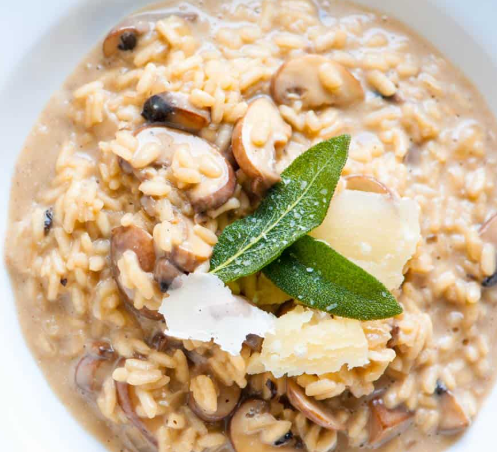

Cream Risotto

Description
Ingredients
- 1 cup Arborio rice (or other risotto rice)
- 4 cups chicken or vegetable stock, kept warm
- 1 small onion, finely chopped
- 2 cloves garlic, minced
- 2 tablespoons butter
- 1 tablespoon olive oil
- 1/2 cup dry white wine (optional)
- 1/2 cup heavy cream
- 1/2 cup grated Parmesan cheese
- Salt and freshly ground black pepper, to taste
- Fresh parsley (optional, for garnish)
Steps
- Heat 2 tablespoons butter and 1 tablespoon olive oil in a pan; sauté chopped onion and minced garlic until translucent.
- Add 1 cup Arborio rice and stir to coat it with the butter and oil for 1-2 minutes.
- Deglaze the pan with 1/2 cup white wine (optional) and let it evaporate.
- Gradually add warm stock (1 ladle at a time), stirring constantly, allowing the rice to absorb it before adding more.
- Repeat until the rice is tender and creamy, about 18-20 minutes.
- Reduce heat and stir in 1/2 cup heavy cream to enrich the risotto.
- Add 1/2 cup grated Parmesan cheese, stirring until melted and combined.
- Season with salt and freshly ground black pepper to taste.
- Garnish with chopped parsley (optional) and extra Parmesan if desired.